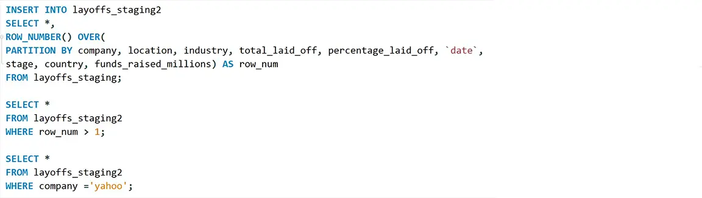

Data cleaning in SQL
In this project I cleaned a dataset that contained data of layoffs made between the years of 2020 and 2023 by many different companies using SQL. I then used this data to perform Exploratory Data Analysis(EDA) on the results of this, that project can be found here.
Cleaning done:
- Removed duplicates
- Standarized columns
- Changed data types of some columns
- Addressed NULL values
- Removed unnecessary data
Link to repository: Github